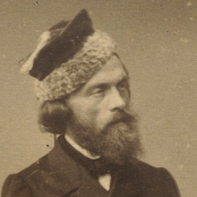

Cyprian Norwid

Cyprian Kamil Norwid, właściwie Cyprian Ksawery Gerard Walenty Norwid herbu Topór (ur. 24 września 1821 w Laskowie-Głuchach, zm. 23 maja 1883 w Paryżu) – polski poeta, prozaik, dramatopisarz, eseista, grafik, rzeźbiarz, malarz i filozof.
Często uznawany za ostatniego z czterech najważniejszych polskich poetów romantycznych. Wielu historyków literatury uważa jednak taki pogląd za zbytnie uproszczenie, zaliczając jego twórczość raczej do klasycyzmu i parnasizmu.
Powrót do strony głównej